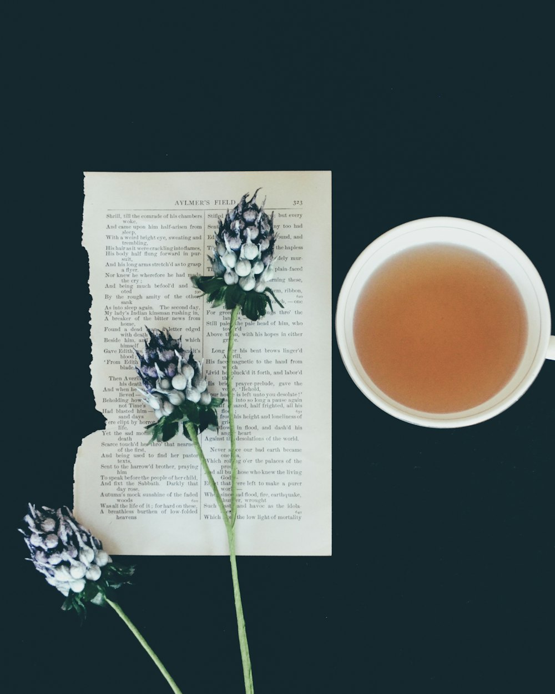

Our story
One kettle, a folding table, and patience
Ten years ago Halcyon was a market stall pouring free tastings of a single green tea. It still runs on the same idea.
Ten years
How we got here
Mei Lin and Oren Hale met behind neighboring stalls at the Linden Street market. She sold tea. He sold the bread people ate with it.

The market stall
One kettle, one green tea, free tastings every Saturday. Mei sold out of tins by noon most weeks.
The first trip
A month visiting gardens in Japan and China, and the start of buying direct from growers.
Linden Street
A former watch repair shop became the tea room: twelve seats, one long counter, no music.
Saturday tastings
Six teas, one slow hour, six guests. Booked out most weeks since.
Eleven gardens
Forty teas, all single estate, from eleven gardens we've visited ourselves.
Where it grows
From sea level to the clouds
Altitude shapes flavor. Low gardens give sweetness and body; high ones give brightness and perfume. These are the four gardens behind our signature teas.
The people
Who pours your cup
Founder · buyer
Mei Lin
Visits every garden before we buy from it, and tastes every new harvest twice: once at the farm, once back home.
Founder · tea room
Oren Hale
Runs the room, the bakery case and the playlist, which is silence. Still bakes the shortbread himself.
Tea master
Sana Okafor
Leads the Saturday tastings and the Sunday matcha ceremony. Can tell a first flush from a second by smell.
Come and sit down
The kettle is always on
Wednesday to Sunday, 10 am to 6 pm, at 41 Linden Street.